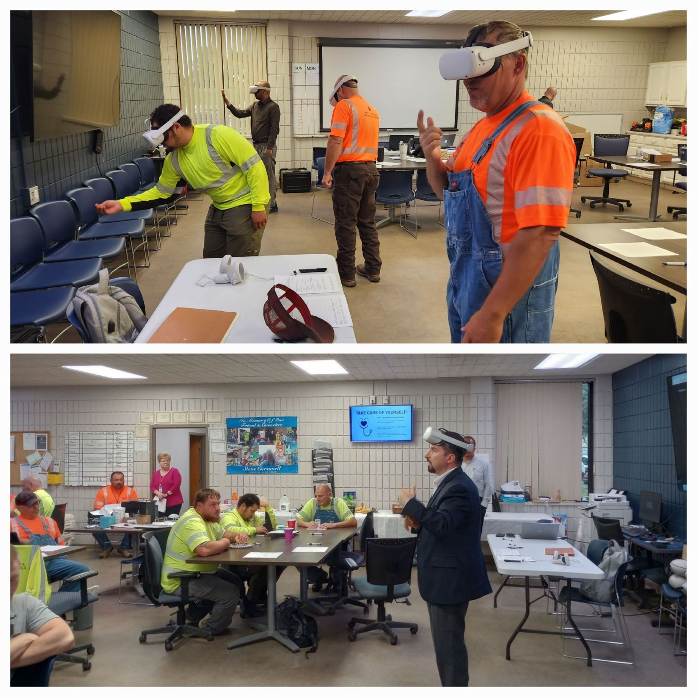
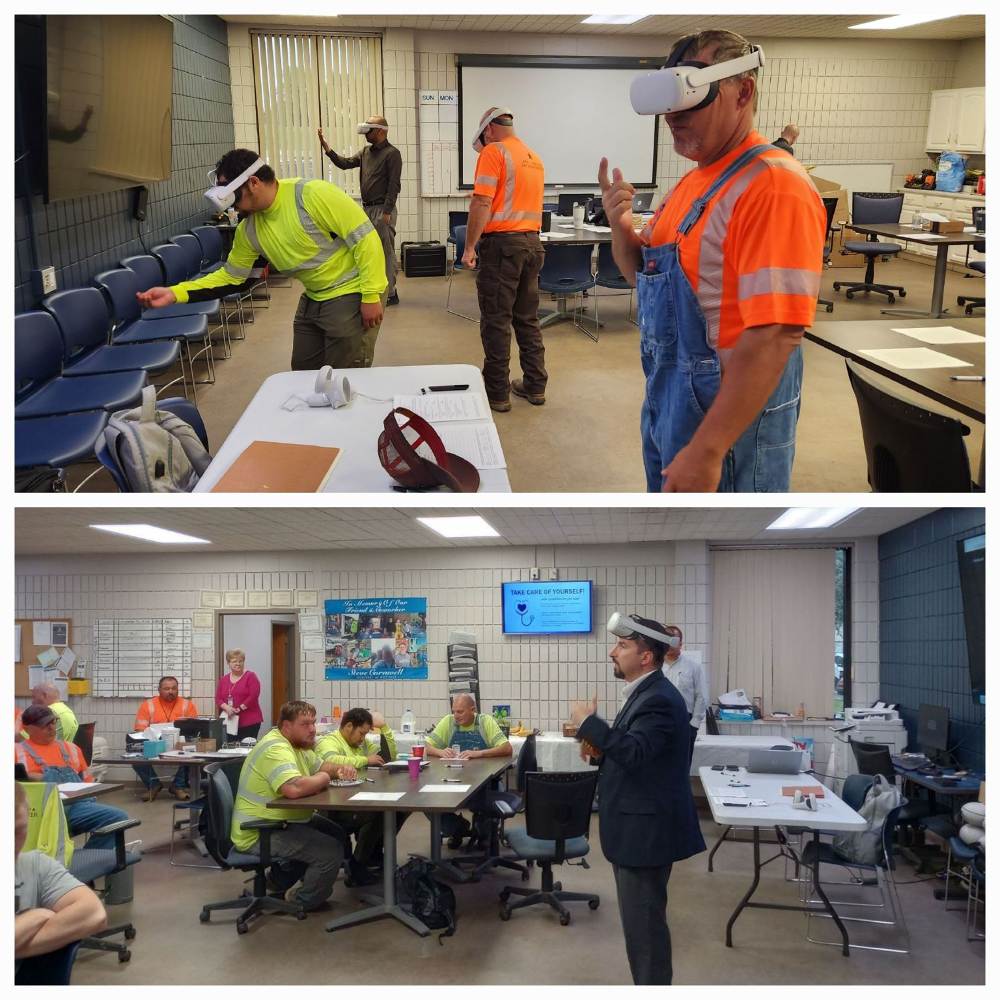

Matthew W. Miller
My passion for programming began at 15 when I built my first video game in an engine called Construct 2. Though the MS Paint graphics and gameplay were crude, the experience ignited my interest in programming. Since then, I've honed my skills in areas like virtual reality development, human behavior modeling, and blockchain technology. As an undergraduate researcher at Marshall University, I spearheaded projects ranging from VR training simulators to decentralized ledger protocols. I'm currently wrapping up my B.S. in Computer Science while also pursuing an M.S. in Computer Science. Beyond academics, I work on small game devlopment projects and protoypes. Driven by creativity and problem-solving, I love learning emerging technologies and applying them to real-world challenges. I'm always seeking to expand my skills across disciplines to craft innovative solutions with these new technologies.

 
